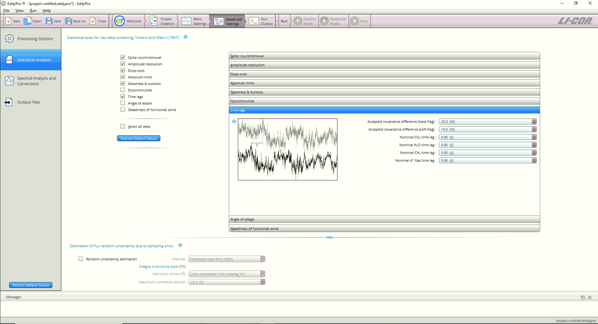
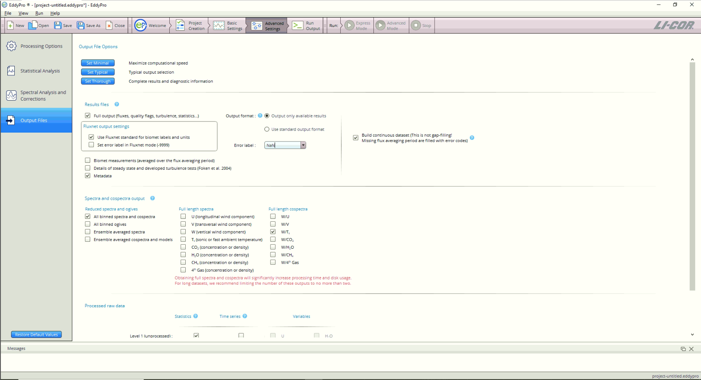

Flux tower data processing
Objective
This is a step by step guide on how to process the raw data from the Santa Rosa National Park Environmental Super Site in Guanacaste, Costa Rica.
Software
- Loggernet
- EddyPro
From .DAT to TOB1 files
- Files from the Santa Rosa tower comes from a Campbell Scientific logger that needs to be transformed in order to be processed by the EddyPro software (LICOR)
- Identify your folder with the
.DATfiles to be converted - Open the program LoggerNet.
- Select Data > Card convert > Select card drive
Folder with .DAT files
LoggerNet CardConvert

Select input folder
Select output folder
This is the folder where we want all our processed files to be stored.
Destination file options
Make sure to select TOB1

Conversion process
If there is an error in one of the files, all the process will stop and we will have to start over.
From TOB1 to csv files
Now, we are going to use the EddyPro software.

Create new project:
First, we have to create a project and select the raw file format as
.TOB1. Also we need to add a meta data file which is:
Metadata_EddyPro_v1_2.metadata
If you don’t have this file, please ask for this to the lab manager.
Select input folder
File names patterns
Files processed from the LoggerNet will have a pattern in their name. We need to follow this rules in order to not have any problem with the conversion process in the eddy pro software.

Basic settings
Advance settings processing options
Advance settings statistical analysis

Advance settings spectral analysis and corrections
Advance settings output files

Run the process
Up to this point, we have been working just in the settings to process the data. Nothing have been done with the data. Given that we configure the advance options we are going to run the process in the Advance mode
If you didn’t set up something correctly, you will have an error message indicating were was the error, so you can fixed it.
After fixing the error, you can start the process again and it will look like this: